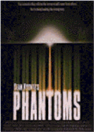
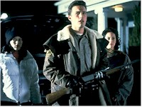
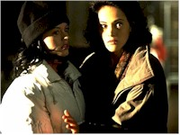

Contents | Features | Reviews | News | Archives | Store |
 |
|
| Movie Credits | Buy It! |
Phantoms
Review by Elias Savada
Posted 30 January 1998
|  | Directed by Joe Chappelle Starring
Peter O'Toole, Rose McGowan, Screenplay by Dean Koontz, based on his book |
Phooey! As this small-town horror flick limps its way to home video oblivion, no viewer (and there were exceedingly few, thank goodness, as the film grabbed a paltry $3.1 million of the U.S. box-office gross last weekend) will mistake this drivel for what it's being hyped as – a Scream rip-off. Distributor Dimension Films, which is responsible for the popular Scream titles (number three in that trilogy is due later this year), suggests in the ever-so-bleh picture's ad slicks a shameless graphic connection to its much more successful cousins. There are obvious links between them, but nowhere near the talent. Liev Schreiber, a veteran of the Scream series, here plays sleazy, whacked-out Deputy Stu Wargle, who would better belong in a sanitarium. Surprisingly, his character is not described in press notes as a disgruntled former postal employee.
I didn't sit down in my theater seat expecting the worst, but my hopes quickly evaporated. Author-screenwriter Dean Koontz has written some great scary horror books that have found wide approval. I've been wearing down pages in his paperbacks on summer vacations for years, but being a literary master of suspense doesn't mean you can translate the material to the screen. Stephen King has the same problem. Let the professionals take over when you want a film adaptation done right, and Koontz should have had the sense to let that happen with this book, which he wrote in 1983. Judging from the critical drubbing Phantoms has induced, wordsmith Koontz will likely think twice about interpreting another tome for big screen consumption (although he has already adapted his novel Cold Fire for ultimate popcorn fare). Director Joe Chappelle's third feature, following his Thieves Quartet (1994) and Halloween: The Curse of Michael Myers (1996), adds no dimension to a standard issue low-budget production.
And then there's Peter O'Toole. What the heck is he doing in this film! It was like watching the late John Carradine, a great character actor (and father of Keith, David, and Robert) whose fine portrayal of Casey in The Grapes of Wrath (1940) was overshadowed by his appearance in his waning years in too many grade z horror films. I hope Mr. O'Toole was paid a better-than-decent salary so he can return to a more appropriate vehicle deserved of this seven-time Academy Award nominee (including several of my all-time favorite films – Lawrence of Arabia, The Lion in Winter, The Stunt Man, and My Favorite Year).
Ben Affleck, co-star and co-writer of the exceptional Good Will Hunting, trods through the film as the heroic Sheriff Bryce Hammond who, with his two deputies (Schreiber and Nicky Katt) and sisters Lisa (Rose McGowan, an alumnus of Scream) and Dr. Jenny Pailey (Joanna Going) find themselves the only surviving citizens of Snowfield, Colorado, a sleepy (and now deadly) Rocky Mountain community just east of the Continental Divide. Timothy Flyte (O'Toole), an Oxford scholar-turned-tabloid journalist (as unlikely a job description as would be Vatican Pope-turned-aerobics instructor) had been warning his reading public of the monstrous shape-shifting flatworm from hell – dubbed the "Ancient Enemy"--in a series of articles in a national rag. As the supernatural enemy undoubtedly reads this infamous publication (hey, even the stars read the Inquirer) or absorbs the headlines from the people it has eaten, it is smart enough to lure the elderly Flyte (and a horde of incompetent medical/military types in several souped-up high-tech RVs) to the deserted town to write the egotistical beast's bio for the next issue. Please, O.J., where are you when we need you!
Now, as the hack is quite a learned fellow and all the government types prove to be fatal pawns in the monster's game, it is up to Flyte to conveniently figure out all the fine-tuned tests necessary to determine what the antagonist is allergic to. An amazing accomplishment as the scribe seems to prefer old manual typewriters over the latest Pentium processor. Flyte also adds a dose of reverse psychology in a battle against this threat to all mankind. And just when you think that peace and tranquillity will reign supreme and we can go back to our meager existence, a little tease of an ending suggests it's not over yet.
Phooey!
Contents | Features | Reviews | News | Archives | Store
Copyright © 1999 by Nitrate Productions, Inc. All Rights Reserved.